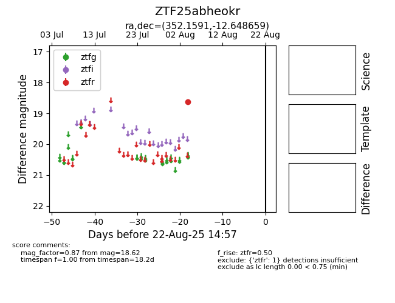

Target ZTF25abheokr at 2025-08-22 14:57, see:
FINK: fink-portal.org/ZTF25abheokr
Lasair: lasair-ztf.lsst.ac.uk/objects/ZTF25abheokr
ALeRCE: alerce.online/object/ZTF25abheokr
alt names
ZTF25abheokr (ztf,alerce)
coordinates:
equatorial (ra, dec) = (352.1591,-12.64866)
galactic (l, b) = (65.6188,-65.80766)
photometry
last ztfr=18.62
1 ztfr detections
